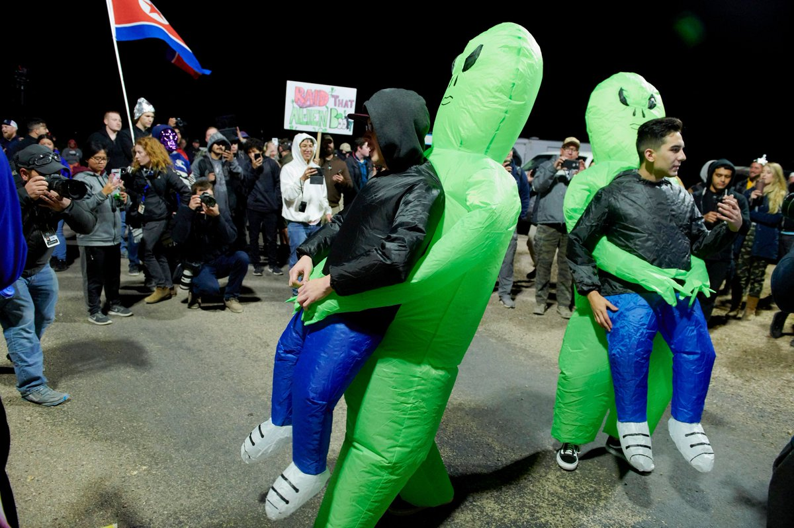

Изначально событие «Штурм зоны 51» набрало более двух миллионов участников, которые грозились тем, что приедут 20 сентрября в назначенное время в окрестности американской военной базы «Area 51»
и массированной атакой пробьются на ее территорию, чтобы выведать силой секреты властей, в том числе касающиеся инопланетян. Когда число участников достигло заветной отметки в два миллиона,
Facebook удалила вирусное событие из-за того, что оно «нарушает стандарты сообщества». Но из-за большой популярности это мероприятие было неоднократно освещено в СМИ, из-за чего распространилось
среди людей по всему миру.
Но в результате в назначенный день в отмеченное место пришли только 4 тысячи человек. Они устроили фестиваль — с пивом и едой. Попытки пробраться на базу предприняли лишь 75 человек, а двое из них
были задержаны за мелкие правонарушения.
Рядом с местом сбора располагается городок Рэйчел, в котором живут 54 человека. К 20 сентября туда съехалось три тысячи человек. В это время в городе прошел ежегодный фестиваль Alienstock. Большая
часть людей гуляла и веселилась, и только несколько смельчаков решились дойти до КПП, от которого начинается «Зона 51». Их, естественно, не пропустили.